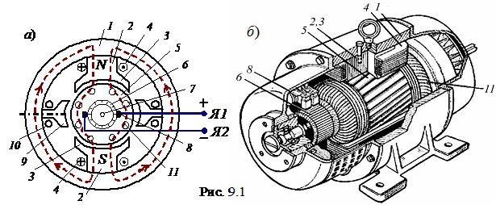
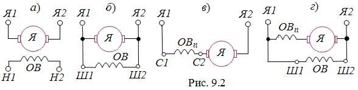

9.1.2. Устройство машин постоянного тока
| Основными частями МПТ (рис. 9.1) являются статор и якорь, отдалённые друг от друга воздушным зазором (0,3…0,5 мм). 
Статор - это стальной цилиндр 1, внутри которого крепятся главные полюса 2 с полюсными наконечниками 3, образуя вместе с корпусом магнитопровод машины (рис. 9.1, а). Полюсные наконечники служат для равномерного распределения магнитной индукции в зазоре между полюсами статора-индуктора и якоря. На главных полюсах расположены последовательно соединённые катушки обмотки возбуждения 4, предназначенные для создания неподвижного магнитного потока Фв машины. Концы Ш1 и Ш2 обмотки возбуждения (ОВ) выводят на клеммный щиток, расположенный на корпусе машины (рис. 9.1, б). Помимо основных полюсов внутри статора располагают дополнительные полюса 9 с обмотками 10, которые служат для уменьшения искрения в скользящих контактах (между щётками и коллектором). Якорь (подвижная часть машины) - это цилиндр 5, набранный из листов электротехнической стали, снаружи которого имеются пазы, в которые уложена якорная обмотка 11. Отводы обмотки якоря (ОЯ) припаивают к пластинам коллектора 6, расположенного на вращающемся в подшипниках валу 7. Коллектор представляет собой цилиндр, набранный из медных пластин, изолированных друг от друга и от вала и закреплённых (по технологии "ласточкина хвоста") на стальной втулке. Коллектор играет роль механического выпрямителя переменной ЭДС, индуктируемой в обмотке якоря. К коллектору с помощью пружин прижимаются неподвижные медно-графитовые щётки 8, соединённые с клеммами Я1 и Я2 щитка (рис. 9.1, б). Образовавшиеся скользящие контакты дают возможность соединить вращающуюся ОЯ с внешней электрической цепью (снять выпрямленное напряжение с коллектора (генераторный режим) или соединить якорную обмотку с источником постоянного напряжения и распределить токи в стержнях ОЯ таким образом, чтобы их направления под разноименными полюсами были бы противоположными (двигательный режим)). Суммарное сопротивление цепи якоря Rя = 0,5…5 Ом. 
Часть машины, в которой индуктируется ЭДС, принято называть якорем, а часть машины, создающей основное магнитное поле (магнитный поток) – индуктором. В машинах постоянного тока якорем является ротор, а индуктором – статор. В зависимости от того, как обмотка возбуждения включена относительно сети и якоря, различают МПТ независимого возбуждения (ОВ к якорю не подключена) и МПТ с самовозбуждением, которое подразделяется на параллельное, последовательное и смешанное. На (рис. 9.2) приведены электрические схемы возбуждения указанных типов МПТ. | |